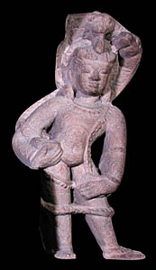

KrishnaThe eighth incarnation of Vishnu was a human being named Krishna. Krishna was raised as a cowherd to protect his true identity. 
Vishnu was sent to earth as Krishna to kill a man named Kansa who was the son of a demon. Kansa was a cruel and disrespectful king. Kansa was warned that he would be killed by a man named Krishna so he tried to kill all babies born to Krishna's mother. However, Krishna was switched at birth with another child and so was able to survive. Many stories exist about Krishna's childhood and youth. They often involve Krishna killing off demons who appeared in many different forms to try and kill him. When Kansa realised that Krishna had killed all of the demons sent to kill him, he invited Krishna to his palace for a feast in honour of the god Shiva. When Krishna arrived at the gate of Kansa's palace, he picked up Shiva's bow and broke it. Then he killed Kansa's guards as well as an elephant sent to trample him to death. Finally, he raced forward and killed Kansa and all of his brothers. |